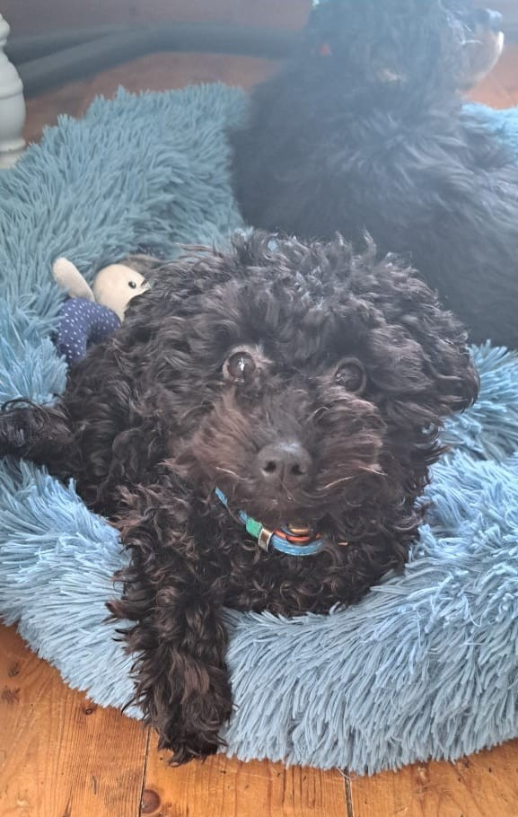

Mijn profiel
Op deze pagina staat er informatie over mij.

Nog meer informatie over mij!
Ik ben geboren in China. Ik was 3.5 jaar toen ik naar Nederland kwam, en ik heb toen 7 jaartjes in Rotterdam gewoond Daarna ben ik naar Zeeland verhuisd.
Ik was al heel vroeg bezig met verschillende technische dingen op het gebied van computers. Ik heb op vakhavo, een tijdelijke richting van havo, ook geleerd om met Arduino te werken.
Wie ben ik?
Hallo, Ik heet Twan en ik ben een persoon die een passie heeft voor programmeren! Ik ben nu 17 jaar, en ik hou van houthakken. Ik ben molenaar, wat betekent dat ik met meelzakken sjouw en klein verpakkingen inpak.
Daarnaast kan ik ook goed kubbussen met een rubikscube. Ik kan nu de kubus in 30 seconden oplossen.
Ik heb een broer en zus die nu ergens anders wonen, en ik woon op een pluimvee bedrijf van mijn vader.
Dat was kort iets over mij.
Klein foto gallerij
Een paar kenmerken van mij op een rij!
- Goede teamgenoot als ik motivatie heb ;)
- Niet erg weerbaar
- Soms vrolijk soms niet
- Niet sterk in sociaal zijn zoals elke ICT-er